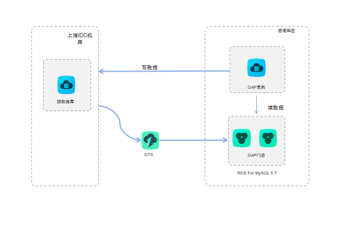

项目上云评估
项目背景
随着业务的发展，之前部署上海电信IDC机房的系统业务的发展速度以及结合云端的优势(低成本、 便捷性、敏捷性等优势)，现计划将上海电信机房内数据迁移到云上，以更好地满足业务的发展需求
前提条件
要能完成上海电信IDC机房迁移至公共云香港专有网络 ，需要注意一下几个迁移条件：
- 上海电信IDC机房防火墙开放DTS网段
- 源数据库实例创建拉取数据用户
- 目标RDS实例已经创建完成
- 待迁移的实例正常使用中
迁移对象
IDC机房生产库实例，数据量未知。
注：为了避免对生产库主实例资源造成影响，建议采用从备库中拉取数据。
xx业务数据库
| 源库规格 | 上海电信IDC机房 |
|---|---|
| 目标库规格 | 公有云 VPC 香港 RDS for MySQL5.7 4C16G 存储(GB)500 |
| 数据量 | |
| DTS规格 | Large |
| 迁移时间 | （后期完善） |
| 迁移速度 | （后期完善） |
| 源库IOPS上涨比例 | （后期完善） |
xx业务数据库
| 源库规格 | 上海电信IDC机房 |
|---|---|
| 目标库规格 | 公有云 VPC 香港 RDS for MySQL5.7 4C8G 存储(GB)200 |
| 数据量 | |
| DTS规格 | Large |
| 迁移时间 | 全量迁移5min |
| 迁移速度 | （后期完善） |
| 源库IOPS上涨比例 | （后期完善） |
迁移方案
DTS提供了数据迁移功能，用户可以创建DTS迁移任务，同步类型选择：结构+全量+增量迁移。
在迁移的过程中，源数据库继续提供服务，迁移过程中的业务更新在增量迁移阶段会被同步到目标数据库。最终会有一个时间点，增量同步达到无延迟状态，即目标数据库追上源数据库的数据，两边数据完全一致，持续同步。
数据库架构：

上海IDC机房通过DTS数据迁移至香港RDS，由于跨地域会有延迟发生：
- 建议添加专线
- 建议上海IDC机房数据迁移至上海RDS，通过DTS数据同步至香港RDS
注：
数据同步支持跨地区迁移走私网，只支持RDS for MySQL 至 RDS for MySQL
数据迁移跨地区要求源端有公网
香港RDS配置只读实例：
数据库迁移演示图：

建议在业务非高峰期时间（如晚上），创建迁移任务。
| 步骤 | 说明 | 实施人员 | 其他 |
|---|---|---|---|
| 1 | 新建DTS迁移任务A | DBA | 自建MySQL数据与RDS for MySQL5.7的数据迁移 |
| 2 | 释放迁移任务A | DBA | |
| 3 | 联调测试 | 业务负责人 | 驻云协助 |
| 6 | 确认正式切割时间 | 业务负责人 | |
| 7 | 业务割接 | 业务负责人 | DTS迁移状态无延迟进行 |
源实例监控
| 监控事项 | 源实例(正常阈值) | 负责人 | 处理（DBA） |
|---|---|---|---|
| CPU | < 70% | 业务负责人 | 超过70%立刻暂停任务 |
| 内存 | < 70% | 业务负责人 | 超过70%立刻暂停任务 |
| IOPS | < 8000 | 业务负责人 | 超过8000立刻暂停任务 |
| 连接数 | < 1000 | 业务负责人 | 超过1000立刻暂停任务 |
| 重点监控时段 | 1. 迁移启动的最初2小时 2. 业务高峰期 |
||
| 监控报告 | 针对重点监控时段， 提供监控报告。 |
上云可行性评估阶段
- 新建DTS迁移任务A：创建一个DTS迁移任务，通过DTS迁移工具中的全量+增量功能实现自建数据MySQL与RDS For MySQL的数据迁移
- 释放迁移任务A：释放迁移任务A，不影响原有自建MySQL
- 联调测试：业务负责人将新环境中的WEB应用与数据库联调测试
- 通过DTS迁移（结构+全量+增量）实现数据库迁移
正式迁移阶段
模板
迁移任务监控
启动时间：
成功时间：
监控时间段： －
对源库的影响
| 监控时间 | 实例规格 | 8核 | 16GB | 8000 | 4000 | |||
|---|---|---|---|---|---|---|---|---|
| 监控指标 | CPU利用率 | 内存使用率 | IOPS使用量 | 当前活跃连接数 | 总连接数 | 网络流量 （输入/输出） | ||
| 2018-06-20 | 同步之前 | |||||||
| 同步5min | ||||||||
| 同步10min | ||||||||
| 同步结束后 |
迁移任务速度
| 源库规格 | 公有云 VPC 华东1可用区E 8核\64G mysql5.5 |
|---|---|
| 目标库规格 | 公有云 VPC 华东1可用区B VPC 8核/32G/1000G/12000 IOPS |
| 数据量 | 450G |
| DTS规格 | Large |
| 迁移时间 | （后期完善） |
| 迁移速度 | （后期完善） |
| 源库IOPS变化 | （后期完善） |
| 源库CPU变化 | （后期完善） |